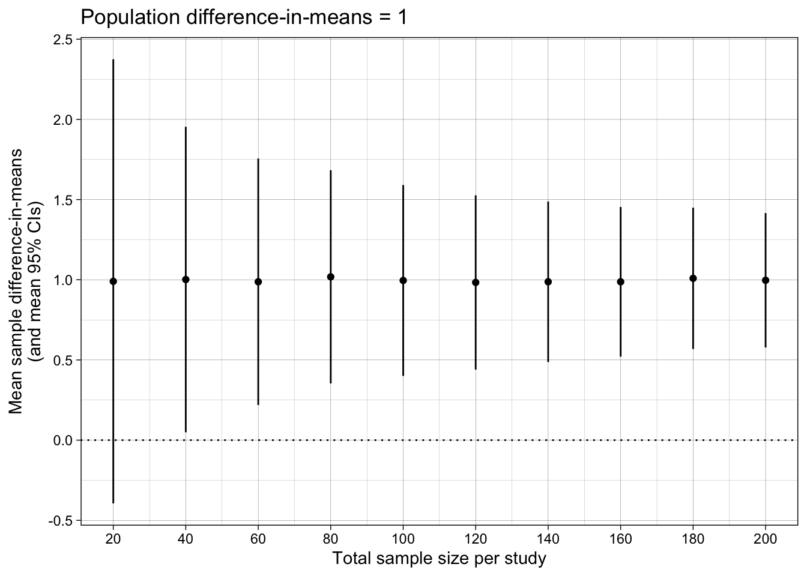
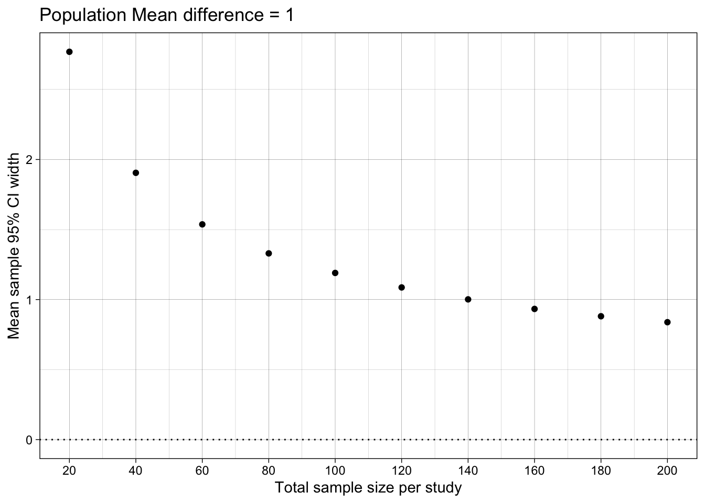

# functions for simulation
generate_data <- function(n_per_condition,
mean_control,
mean_intervention,
sd) {
data_control <-
tibble(condition = "control",
score = rnorm(n = n_per_condition, mean = mean_control, sd = sd))
data_intervention <-
tibble(condition = "intervention",
score = rnorm(n = n_per_condition, mean = mean_intervention, sd = sd))
data_combined <-
bind_rows(data_control,
data_intervention) |>
mutate(condition = factor(condition, level = c("intervention", "control")))
return(data_combined)
}
analyse <- function(data){
fit <- t.test(
formula = score ~ condition,
var.equal = TRUE, # students t test: assumes equal variances
data = data
)
results <- fit %>%
model_parameters() %>%
as_tibble() %>%
janitor::clean_names() %>%
# create estimand
mutate(confidence_interval_width = ci_high - ci_low) |>
# select columns of interest
select(mean_diff = difference, # for parameter recovery
ci_low, # for plotting
ci_high, # for plotting
confidence_interval_width) # the estimand
return(results)
}
# simulation parameters
experiment_parameters <- expand_grid(
n_per_condition = seq(from = 10, to = 100, by = 10),
mean_control = 4,
mean_intervention = 5,
sd = 1.5,
iteration = 1:1000
)
# run simulation
# results are cached to disk: the simulation is only run the first time, and read back
# in on subsequent renders. delete the .rds file if you change the simulation code.
dir.create("results", showWarnings = FALSE)
if(file.exists("results/simulation_estimation_exercises.rds")){
simulation <- read_rds("results/simulation_estimation_exercises.rds")
} else {
# set seed
set.seed(43)
simulation <- experiment_parameters |>
# shuffle the rows of the grid to load balance the computationally expensive
# iterations evenly across the workers
slice_sample(prop = 1) |>
mutate(generated_data = future_pmap(.l = list(n_per_condition = n_per_condition,
mean_control = mean_control,
mean_intervention = mean_intervention,
sd = sd),
.f = generate_data,
.progress = TRUE,
.options = furrr_options(seed = TRUE))) |>
mutate(results = future_pmap(.l = list(data = generated_data),
.f = analyse,
.progress = TRUE,
.options = furrr_options(seed = TRUE))) |>
# undo the shuffle so the rows are back in the order of the experiment grid
arrange(n_per_condition, iteration) |>
# the generated data sets are not needed after they have been analyzed, and keeping
# them would make the saved file enormous
select(-generated_data)
write_rds(x = simulation,
file = "results/simulation_estimation_exercises.rds",
compress = "gz")
}
# summarise results
results_summary <- simulation |>
unnest(results) |>
group_by(n_per_condition) |>
summarize(mean_difference_in_means = mean(mean_diff),
mean_ci_low = mean(ci_low),
mean_ci_high = mean(ci_high),
mean_confidence_interval_width = mean(confidence_interval_width))
## table
## remember: only round results as you're about to print a table
results_summary |>
mutate_if(is.numeric, round, digits = 1)| n_per_condition | mean_difference_in_means | mean_ci_low | mean_ci_high | mean_confidence_interval_width |
|---|---|---|---|---|
| 10 | 1 | -0.4 | 2.4 | 2.8 |
| 20 | 1 | 0.0 | 2.0 | 1.9 |
| 30 | 1 | 0.2 | 1.8 | 1.5 |
| 40 | 1 | 0.4 | 1.7 | 1.3 |
| 50 | 1 | 0.4 | 1.6 | 1.2 |
| 60 | 1 | 0.4 | 1.5 | 1.1 |
| 70 | 1 | 0.5 | 1.5 | 1.0 |
| 80 | 1 | 0.5 | 1.5 | 0.9 |
| 90 | 1 | 0.6 | 1.4 | 0.9 |
| 100 | 1 | 0.6 | 1.4 | 0.8 |
## Difference-in-means
ggplot(results_summary, aes(n_per_condition*2, mean_difference_in_means)) +
geom_point() +
geom_linerange(aes(ymin = mean_ci_low, ymax = mean_ci_high)) +
geom_hline(yintercept = 0, linetype = "dotted") +
scale_x_continuous(breaks = breaks_pretty(n = 10),
name = "Total sample size per study") +
scale_y_continuous(breaks = breaks_pretty(n = 5),
#limits = c(0,1),
name = "Mean sample difference-in-means\n(and mean 95% CIs)") +
theme_linedraw() +
ggtitle("Population difference-in-means = 1")
## Difference-in-means' 95% Confidence Interval width
ggplot(results_summary, aes(n_per_condition*2, mean_confidence_interval_width)) +
geom_hline(yintercept = 0, linetype = "dotted") +
#geom_linerange(aes(ymin = min_ci_width, ymax = max_ci_width)) +
geom_point() +
#scale_y_continuous(name = "95% CI width\n(mean [min, max])", limits = c(0, NA)) +
scale_y_continuous(name = "Mean sample 95% CI width",
limits = c(0, NA)) +
scale_x_continuous(breaks = breaks_pretty(n = 9),
name = "Total sample size per study") +
theme_linedraw() +
scale_color_viridis_d(begin = 0.3, end = 0.7) +
ggtitle("Population Mean difference = 1")